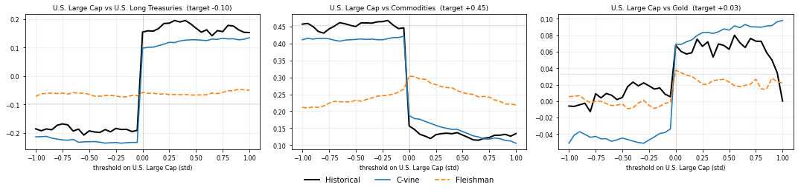

CVineMarketGen — Example 1: LTCMA targeting¶

Four asset classes (U.S. Large Cap, U.S. Long Treasuries, Commodities, Gold) with J.P. Morgan’s 2024 Long-Term Capital Market Assumptions as targets for the mean, the volatility and the correlation matrix, following the pipeline of the paper Vine-Copula Based Financial Market Simulation with Moment and Tail Dependence Targeting (thesis, article 3).
A synthetic history is simulated from a C-vine with known copula families, so that the family selection (Algorithm 3) can be checked against the truth. The vine is then calibrated to the targets (Algorithm 4) and a scenario matrix is simulated back (Algorithm 5). The Fleishman + Vale-Maurelli generator (Section 3 of the paper) is run on the same targets as a benchmark, and the exceedance-correlation curves of the three series are compared.
Seeded and reproducible; runtime on a laptop about 3 to 4 minutes. See also
example_factors.ipynb, the same pipeline on six macro
factors built from point-in-time market data.
import os, sys, time, warnings, io, contextlib
import numpy as np
import pandas as pd
import matplotlib.pyplot as plt
warnings.filterwarnings("ignore")
ROOT = os.path.dirname(os.getcwd()) if os.path.basename(os.getcwd()) == "examples" else os.getcwd()
sys.path.insert(0, ROOT) # allows running from a local clone (from examples/ or the root)
try:
import cvinemarketgen # local clone or already installed
except ImportError: # e.g. on Google Colab
import subprocess
subprocess.run([sys.executable, "-m", "pip", "install", "-q",
"git+https://github.com/mamadouyamar/CVineMarketGen.git"], check=True)
import cvinemarketgen
from cvinemarketgen import CVineGenerator, FleishmanGenerator
RAW = "https://raw.githubusercontent.com/mamadouyamar/CVineMarketGen/main/data/"
def load_targets(name):
path = os.path.join(ROOT, "data", name)
return pd.read_csv(path if os.path.exists(path) else RAW + name, index_col="Assets")
N_HIST = 3000 # length of the synthetic "historical" series
N_OPT = 10000 # draws used inside the correlation-targeting optimizer (paper: 20000)
N_SIM = 25000 # scenarios in the final simulated matrix (paper: 25000)
CORR_TOL = 5e-2 # acceptance tolerance on pairwise correlations (paper: 2e-2 with N_OPT = 20000)
SEED = 1
def make_generator():
return CVineGenerator(tol_opt=1e-10, n_samples=N_OPT,
use_ncs_on_firsttree=False, use_ncs_on_deepertrees=False,
use_mixture_on_firsttree=True, use_mixture_on_deepertrees=False,
force_try_ncscopula=False, tol_for_optimization_func=1e-6)
def show_moments(name, cal, t):
print(f"== {name} (N={N_SIM}, {t:.0f}s) ==")
cols = ['mean (target)', 'mean (calibrated)', 'volatility (target)', 'volatility (calibrated)',
'skewness (target)', 'skewness (calibrated)', 'kurtosis (target)', 'kurtosis (calibrated)']
print(cal[cols].round(4).to_string())
print("max |diff| mean, vol, skew, kurt:",
[f"{cal[c].abs().max():.1e}" for c in ['diff mean', 'diff volatility', 'diff skewness', 'diff kurtosis']])
def show_corr(name, target, sim):
d = (sim.corr().values - target.values) * 100
lo = d[np.tril_indices(len(target), -1)]
print(f"{name}: correlation error in percentage points -> max |.| {np.abs(lo).max():.2f}, mean |.| {np.abs(lo).mean():.2f}")
def plot_exceedance(gen, base, others, series, targets, ncols=3, zlim=1.0):
z = np.arange(-zlim, zlim + 0.025, 0.05)
n = len(others); nrows = int(np.ceil(n / ncols))
fig, axes = plt.subplots(nrows, ncols, figsize=(5 * ncols, 3.6 * nrows), squeeze=False)
style = {'Historical': dict(color='black', lw=2), 'C-vine': dict(color='tab:blue', lw=1.6),
'Fleishman': dict(color='tab:orange', lw=1.6, ls='--')}
for ax, a in zip(axes.flat, others):
for name, df in series.items():
ax.plot(z, gen.exceedance_correlation(df[base].values, df[a].values, z), label=name, **style[name])
ax.axvline(0, color='grey', lw=0.6, ls=':'); ax.axhline(targets.loc[base, a], color='grey', lw=0.6, ls=':')
ax.set_title(f"{base} vs {a} (target {targets.loc[base, a]:+.2f})", fontsize=9)
ax.set_xlabel(f"threshold on {base} (std)", fontsize=8); ax.tick_params(labelsize=8); ax.grid(alpha=0.25)
for ax in axes.flat[n:]:
ax.axis('off')
h, l = axes.flat[0].get_legend_handles_labels()
fig.legend(h, l, loc='lower center', ncol=3, frameon=False); fig.tight_layout(rect=(0, 0.05, 1, 1)); plt.show()
quiet = lambda: contextlib.redirect_stdout(io.StringIO()) # silences the pipeline's progress prints
print("setup done")
setup done
Example 1 — LTCMA targeting (4 asset classes)¶
Targets: mean, volatility and correlations of U.S. Large Cap, U.S. Long Treasuries,
Commodities and Gold from J.P. Morgan’s 2024 LTCMAs (data/jpm_ltcma_2024.csv,
public figures). U.S. Large Cap is the central node of the C-vine.
Synthetic history, simulated with known families (indices \(\theta_{ik|1:k-1}\) of the paper): the (Long Treasuries, Large Cap) edge is a mixture of a Clayton 270° and a Gumbel copula, which produces the sign change of the conditional correlation (“flight to quality”); (Commodities, Large Cap) is a Gumbel 180° (lower-tail dependence); (Gold, Large Cap) is Gaussian with \(\rho = 0.05\); deeper trees are Gaussian. The Johnson SU marginals are those fitted in the paper for these four assets.
assets = ['U.S. Large Cap', 'U.S. Long Treasuries', 'Commodities', 'Gold']
ltcma = load_targets("jpm_ltcma_2024.csv").loc[assets, ['Arithmetic Mean', 'Volatility'] + assets]
target_corr = ltcma[assets]
print(ltcma.round(3).to_string())
edges = {(2, 1): ('mixture', [('clayton', 270, 0.66), ('gumbel', 0, 1.84)], 0.70), # Long Treasuries | Large Cap
(3, 1): ('gumbel', 180, 1.38), # Commodities | Large Cap
(4, 1): ('gaussian', 0, 0.05), # Gold | Large Cap
(3, 2): ('gaussian', 0, -0.15), (4, 2): ('gaussian', 0, 0.30), (4, 3): ('gaussian', 0, 0.20)}
jsu = {'U.S. Large Cap': (2.570, 2.179, 3.540, 2.646), 'U.S. Long Treasuries': (-0.096, -0.095, 2.279, 2.062),
'Commodities': (0.611, 0.589, 2.092, 1.774), 'Gold': (-0.523, -0.516, 2.893, 2.675)} # (gamma, xi, delta, lambda)
gen = make_generator()
spec = gen.make_vine_spec(assets, edges)
hist = gen.simulate_known_vine(spec, jsu, ltcma['Arithmetic Mean'], ltcma['Volatility'], assets, n=N_HIST, seed=SEED)
print(f"\nsynthetic history: {hist.shape[0]} observations")
print(gen.true_edge_table(assets, edges).to_string(index=False))
Arithmetic Mean Volatility U.S. Large Cap U.S. Long Treasuries Commodities Gold
Assets
U.S. Large Cap 0.082 0.162 1.000 -0.096 0.455 0.033
U.S. Long Treasuries 0.059 0.124 -0.096 1.000 -0.231 0.312
Commodities 0.053 0.180 0.455 -0.231 1.000 0.356
Gold 0.054 0.169 0.033 0.312 0.356 1.000
synthetic history: 3000 observations
tree edge true family true parameters
1 U.S. Long Treasuries , U.S. Large Cap clayton 270° + gumbel 0° w=0.7, theta=(0.66, 1.84)
1 Commodities , U.S. Large Cap gumbel 180° theta=1.38
1 Gold , U.S. Large Cap gaussian 0° theta=0.05
2 Commodities , U.S. Long Treasuries | U.S. Large Cap gaussian 0° theta=-0.15
2 Gold , U.S. Long Treasuries | U.S. Large Cap gaussian 0° theta=0.3
3 Gold , Commodities | U.S. Large Cap, U.S. Long Treasuries gaussian 0° theta=0.2
Family selection (Algorithm 3)¶
load_data_and_setup computes the target skewness and kurtosis from the history and
fits the Johnson SU marginals; fit_and_structure_CVine classifies every edge from its
exceedance-correlation curve, pre-selects the admissible families, fits them by maximum
likelihood and keeps the best BIC. Compare with the true table above.
np.random.seed(SEED)
t0 = time.time()
with quiet():
setup = gen.load_data_and_setup(ltcma, hist, assets)
fit = gen.fit_and_structure_CVine(setup)
print(f"\nselection done in {time.time() - t0:.0f}s")
print(gen.selected_edge_table(assets, fit).to_string(index=False))
selection done in 6s
tree edge selected family parameters
1 U.S. Long Treasuries , U.S. Large Cap clayton 270° + gumbel 0° w=0.69, theta=(0.608, 1.948)
1 Commodities , U.S. Large Cap gumbel 180° theta=1.396
1 Gold , U.S. Large Cap clayton 180° + gumbel 90° w=0.15, theta=(0.588, 1.000)
2 Commodities , U.S. Long Treasuries | U.S. Large Cap gaussian 0° theta=-0.142
2 Gold , U.S. Long Treasuries | U.S. Large Cap gaussian 0° theta=0.293
3 Gold , Commodities | U.S. Large Cap, U.S. Long Treasuries gaussian 0° theta=0.174
Calibration to the LTCMA correlations (Algorithm 4) and simulation (Algorithm 5)¶
The copula parameters are re-calibrated, variable by variable, so that the simulated
correlations match the LTCMA targets while the selected families are preserved. Then a
matrix of N_SIM scenarios is drawn, the marginal parameters are re-fitted on the draw,
and the draw is accepted if it meets the tolerances (2e-4 on mean and volatility, 5e-2
on skewness and kurtosis, CORR_TOL on all correlations).
t0 = time.time()
with quiet():
vine = gen.run_vine_optimization(setup, fit)
sims, cals, targets = gen.run_multi_year_simulation(vine, n_year=1, n_per_year=N_SIM, corr_tol=CORR_TOL)
cal = cals[0]
t_vine = time.time() - t0
vine_sim = sims[0]
print(f"\ncalibration + simulation done in {t_vine:.0f}s\n")
print(gen.selected_edge_table(assets, fit, vine).to_string(index=False)); print()
show_moments("C-vine, 4 assets", cal, t_vine)
show_corr("C-vine", target_corr, vine_sim)
calibration + simulation done in 165s
tree edge selected family parameters
1 U.S. Long Treasuries , U.S. Large Cap clayton 270° + gumbel 0° w=0.73, theta=(0.646, 1.937)
1 Commodities , U.S. Large Cap gumbel 180° theta=1.379
1 Gold , U.S. Large Cap clayton 180° + gumbel 90° w=0.21, theta=(0.598, 1.032)
2 Commodities , U.S. Long Treasuries | U.S. Large Cap gaussian 0° theta=-0.204
2 Gold , U.S. Long Treasuries | U.S. Large Cap gaussian 0° theta=0.319
3 Gold , Commodities | U.S. Large Cap, U.S. Long Treasuries gaussian 0° theta=0.514
== C-vine, 4 assets (N=25000, 165s) ==
mean (target) mean (calibrated) volatility (target) volatility (calibrated) skewness (target) skewness (calibrated) kurtosis (target) kurtosis (calibrated)
U.S. Large Cap 0.081907 0.0819 0.161853 0.1619 -0.509086 -0.5091 3.581489 3.5815
U.S. Long Treasuries 0.059175 0.0592 0.123919 0.1239 0.098696 0.0987 3.746148 3.7461
Commodities 0.05306 0.0531 0.180031 0.1800 -0.530238 -0.5302 4.317763 4.3178
Gold 0.054329 0.0543 0.169256 0.1693 0.092819 0.0928 3.365687 3.3657
max |diff| mean, vol, skew, kurt: ['1.6e-08', '3.6e-06', '6.2e-07', '5.9e-07']
C-vine: correlation error in percentage points -> max |.| 2.48, mean |.| 0.94
Fleishman + Vale-Maurelli benchmark (Section 3 of the paper)¶
Same targets (mean, volatility, skewness, kurtosis, correlations): Fleishman coefficients per asset, Vale-Maurelli intermediate correlations per pair, then a Gaussian vector transformed asset by asset, with the same accept-reject loop.
ts = setup['df_target_stats']
fg = FleishmanGenerator()
t0 = time.time()
out = fg.fit(ts['Arithmetic Mean'], ts['Volatility'], ts['Skewness'], ts['Kurtosis'] - 3, setup['ltcma_corr'])
print("Fleishman coefficients (a, b, c, d):"); print(out['coef'][['a', 'b', 'c', 'd']].astype(float).round(4).to_string())
print("pairs without a real Vale-Maurelli root:", len(out['infeasible_pairs']))
fleish_sim, ferr, _ = fg.simulate(N_SIM, corr_tol=CORR_TOL, seed=SEED, verbose=False)
print(f"\nsimulation done in {time.time() - t0:.0f}s; max |error| mean, vol, skew, kurt:",
[f"{ferr[k]:.1e}" for k in ['mean', 'vol', 'skew', 'kurt']])
show_corr("Fleishman", target_corr, fleish_sim)
Fleishman coefficients (a, b, c, d):
a b c d
U.S. Large Cap 0.0807 0.9656 -0.0807 0.0092
U.S. Long Treasuries -0.0143 0.9245 0.0143 0.0245
Commodities 0.0744 0.9003 -0.0744 0.0304
Gold -0.0143 0.9599 0.0143 0.0131
pairs without a real Vale-Maurelli root: 0
simulation done in 0s; max |error| mean, vol, skew, kurt: ['3.2e-16', '3.6e-06', '4.4e-12', '6.3e-11']
Fleishman: correlation error in percentage points -> max |.| 1.56, mean |.| 0.86
Exceedance correlation: synthetic history vs the two generators¶
Correlation between U.S. Large Cap and each other asset, conditional on U.S. Large Cap being below the threshold \(z\) (for \(z<0\)) or above it (for \(z \ge 0\)), in standard deviations. The C-vine generator reproduces the shape of the synthetic history, including the sign change for Long Treasuries; the Fleishman generator, whose dependence is Gaussian, gives smooth symmetric curves at the level of the target.
plot_exceedance(gen, assets[0], assets[1:], {'Historical': hist, 'C-vine': vine_sim, 'Fleishman': fleish_sim}, target_corr)

Reading the results¶
Moments: both generators re-fit their marginal parameters on the accepted draw, so the four moments are matched by construction.
Correlations: both generators reach the targets within
CORR_TOL. The Fleishman generator is usually closer, since the Vale-Maurelli step solves each pairwise equation exactly; the C-vine generator matches the correlations numerically under the constraint of the selected families.Tail dependence: only the C-vine generator reproduces the shape of the exceedance-correlation curves (jump at zero, sign change on the mixture edges). The Fleishman generator inherits the Gaussian copula of its underlying normal vector, whose curves are smooth and symmetric.
Selection: near-independent pairs (target correlation close to zero) are not identifiable from an exceedance curve, and the selected family may differ from the true one (Gold in Example 1); the calibration still reaches the target level.
Reference: thesis, article 3, Vine-Copula Based Financial Market Simulation with Moment and Tail Dependence Targeting, Sections 3 to 5 and Appendix C.